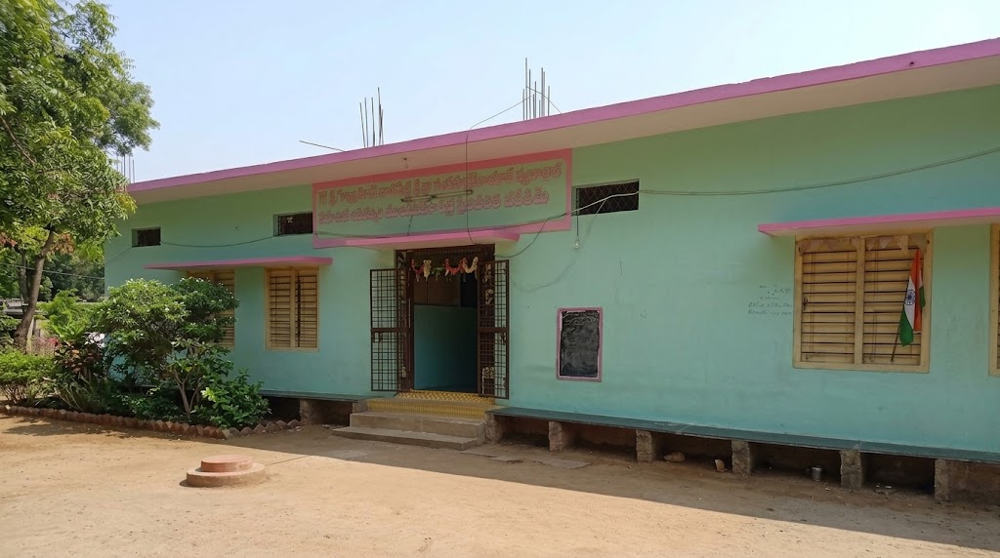
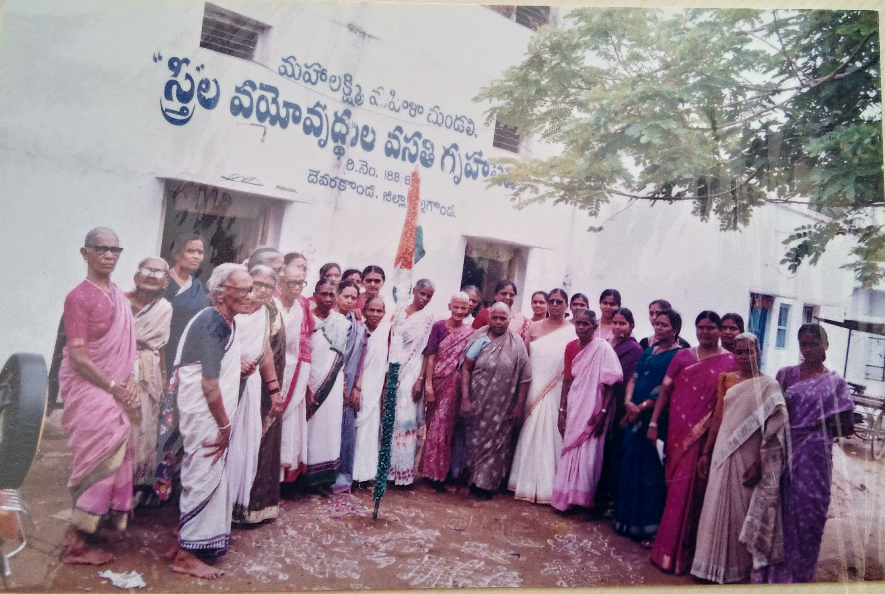

Women & Child Welfare
Community welfare and support activities.
Who we are
Mahalaxmi Mahila Mandali is based in Devarakonda, Nalgonda District, Telangana. It was started in 1967 and has worked in women and child welfare, family support, aged welfare and community-oriented activities.
Activities include family counselling, AIDS awareness, care and support, vocational and handicraft training, the Mahila Sewing Centre, old-age care and Mahila Chitfund activities.
Read our history →
What we do
Community welfare and support activities.
Sewing, handicraft and skill-development activities.
Guidance and support for families.
AIDS awareness, care and support activities.
Care and dignity for older people.
Mahila Sewing Centre and reported Mahila Chitfund activities.

Registration reported as No. 188/67.
Building inaugurated on 22-3-1986.
Mahalaxmi Mahila Mandali Old Age Home was established on May 13, 1994. In September 1994, our President and Treasurer personally visited New Delhi to present our vision to the Ministry of Social Justice and Empowerment (formerly Ministry of Welfare). With the generous support and assistance of the Central Government, we have been successfully operating and maintaining the home to support elderly women.Started with 25 beds for elderly women above 60.